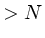
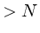

The user can separately control how text and line segments are rendered in five different contexts: axes and their numbering (a), figures (lines, boxes, and arrows, f), labels (l), data plots (p), axis and graph titles (t), and all of these at once (all). The contexts (a, f, l, p, and t) are the five predefined font groups. The table below matches each of the predefined font groups with the plt options having related outputs.
| Font group | Options |
| a | xa, ya, X, Y (axes and numbering) |
| f | A, a, B, b, C, c, D, d, le, lp (figures and legends) |
| l | L, l, hl, vl (labels) |
| p | p and sub-options (data plots) |
| t | x, y, t (titles) |
A font group is defined by the following six parameters:
| c | courier | h | helvetica | t | times |
| c-b | courier-bold | h-b | helvetica-bold | t-b | times-bold |
| c-o | courier-oblique | h-o | helvetica-oblique | t-i | times-italic |
| c-b-o | courier-bold-oblique | h-b-o | helvetica-bold-oblique | t-b-i | times-bold-italic |
| s | symbol |
![[*]](crossref.png) )
)
| 0 | solid |
| 1 | dotted |
| 2 | shortdashed |
| 3 | dotdashed |
| 4 | longdashed |
Use the -sf option to define a font group or to modify the parameters of a predefined font group:
-sf fontgroup specs ...
The fontgroup argument is the name of the font group; this can be one of a, f, l, p, or t, or you can specify any other name you choose for a custom font group. The specs arguments can include any of the parameter names F, P, C, G, W, or L, followed immediately by the value to be given to the parameter; separate parameters with commas. For example, the following specifies that titles should be shown using 18-point Times Bold Oblique:
-sf t Ft-b-o,P18
Before it produces any output, plt scans the entire command line (and the format file, if -f is used) for font group definitions made using -sf. Thus the position of -sf among the other options makes no difference to the final result.
Fontgroup substitution can be used to make plt use any desired fontgroup to control the appearance of any desired element. Although each plt option that renders text or graphics has an associated font group that normally determines its appearance, any other font group can take on this function if you substitute it by naming it when using the option. For most plt options, do this by supplying the font group's name in parentheses immediately after the option, as in these examples:
-B "(p)" .1 .1 .3 .5 -L "(t)" .6 .4 CB "Group A (n=25)"(The quotation marks should be omitted within a format file; they are needed on the command line to protect the parentheses from the shell.) When using fontgroup substitution after a -p option, however, the font group name should follow the plotstyle specification, as in:
-p "0,1Striangle(t)"
Even more flexibility is possible using transient fontgroup modifications. These can be performed using the same syntax as for fontgroup substitutions, except that what goes inside the parentheses is a list of fontgroup parameters, for example:
-D "(Cmagenta)" .1 .6 .2 .7 -p "0,1n(W3,Ldashed)"Transient fontgroup modifications apply only to the option in which they are defined.
In addition to absolute parameter values, as above, relative
parameter values may be supplied in a font group specification.
Relative parameter values are given in the form  op, where
op is one of the arithmetic operators (+, -, *, or
/) and is the amount by which the previous value of the parameter
is to be increased, decreased, multiplied, or divided respectively. For
example, W*2 doubles the previous line width.
op, where
op is one of the arithmetic operators (+, -, *, or
/) and is the amount by which the previous value of the parameter
is to be increased, decreased, multiplied, or divided respectively. For
example, W*2 doubles the previous line width.
Figure 11.3 was created using:
plt example14.data -f fontgroup.format
The data file, example14.data, contains 21 samples of a noisy sinusoid. The format file, fontgroup.format, contains:
# The entire format file is scanned for "sf" options before
# anything is rendered, so the x axis title is rendered in
# the font specified by the "sf t" option below.
x Time (seconds)
# Specify black 24-point Helvetica Bold for the "t" fontgroup.
# Although black is the default color, it needs to be specified
# explicitly (see below).
sf t Fh-b,P24,Cblack
# Specify red for the "p" fontgroup.
sf p Cred
# Here, a transient fontgroup modification (P/2) overrides the
# previously defined point size setting for the "t" font, so
# that the y axis title is rendered half as large as the
# (unscaled) x axis title.
y (P/2) Amplitude
# As shown in the previous line, if the argument following
# an option begins with "(", it is interpreted as a local
# fontgroup spec. In order to use a string beginning with
# "(" as a string argument, it is necessary to quote it:
t "(Noisy) Sinusoid"
# Note that this title is rendered in 24-point type; the
# effect of the local spec used earlier is limited to the
# line on which it appeared.
# Here, we make two plots, first a normal plot using the
# "p" fontgroup (in red), then a scatter plot using triangles.
# The effect of the "(t)" is to specify that the "t" fontgroup
# must be used for the second plot; thus the triangles are
# black, not red, and are sized to match the 24-point type of
# fontgroup "t".
p 0,1n(p) 0,1Striangle(t)
# If, however, the color had not been specified explicitly
# for fontgroup "t", plt would not change the color between
# plots, and the triangles would be rendered in red.
Figure 11.4 shows several more complex uses of different font groups. This figure was produced using the command:
plt example14.data % -f example14.formatusing the same data file as in the previous example. The format file, example14.format, contains:
# Set font and point size for font group "l" (labels). sf l Fs,P20 # Define two custom font groups, "fontgroup1" and "fontgroup2". sf fontgroup1 W40,G.2 sf fontgroup2 Fh-b,P30,G.8 # Plot the data three times, first with a broad dark line, # then with a medium light line, finally with open diamonds # (symbol 2). p 0,1n(fontgroup1) 0,1n(W10,G.8) 0,1S2 # Print the plot title. t (fontgroup2) This is an example # Local specifications are given below for the x and y axis # titles. These would override defaults for the predefined # title (-sf t ...) font group had any been set. x (Fc-o,P15) This is the x axis y (Fc,P6) This is the y axis # The label uses font group l defaults set above unless local # instructions are given. The choice of font "s" (Symbol) # above means that the Roman letters in the label string are # rendered as Greek letters on the plot. L .1 .87 - l = t + g # Set y axis parameters. By specifying the crossing point at # x = -10, we place the y axis away from the data at x=0, and # the axes do not actually touch each other. ya -2 2 - - 2 -10
# Construct the legend (key). The final argument (.1) of the # lp option lengthens the sample plot segment to 10% of the x # axis length. Three entries are overlaid on line 0 of the # legend in order to construct a sample plot segment with the # same appearance as in the data plot. lp .65 .15 1.05 .1 le 0 0 dummy data le 0 1 le 0 2 # Draw an arrow, using local specifications for the point size # (determines the size of the arrowhead), grey level, and line # width. a (P30,G.6,W30) 30 -1.3 50 -1.7 # Label the arrow, overriding the default font so that the # label is printed using Roman rather than Greek characters. l (Ft) 50 -1.8 - arrow # Demonstrate line segment drawing using local specifications. # First draw a broad black line segment, then a narrow white # line segment over the first. c (W100,G0) 0 1.8 100 1.8 c (W2,G.99) 0 1.8 100 1.8
Figure 11.5 illustrates how plt can be used to produce plots in color. This plot was created using the command:
plt -f colors.formatThe file colors.format contains:
X 0 1 Y 0 1 sf a CSkyBlue sf red Cred sf green Cgreen sf blue Cblue sf PapayaWhip CPapayaWhip sf coral Ccoral sf yellow Cyellow sf custom1 C#007f00 sf custom2 C#cc007f sf custom3 C#101010 sf white Fh-b Cwhite sf black Fh Cblack D (red) .1 .8 .3 1.0 L (white) .2 .9 CC red D (green) .4 .8 .6 1.0 L (white) .5 .9 CC green D (blue) .7 .8 .9 1.0 L (white) .8 .9 CC blue D (PapayaWhip) .1 .5 .3 .7 L (black) .2 .6 CC PapayaWhip D (coral) .4 .5 .6 .7 L (white) .5 .6 CC coral D (yellow) .7 .5 .9 .7 L (black) .8 .6 CC yellow D (custom1) .1 .2 .3 .4 L (white) .2 .3 CC #007f00 D (custom2) .4 .2 .6 .4 L (white) .5 .3 CC #cc007f D (custom3) .7 .2 .9 .4 L (white) .8 .3 CC #101010 x (green) x axis y (red) y axis t (blue) Plotting in color
See appendix A, Color Names, beginning on
page ), for details on specifying arbitrary
colors, and for a complete list of predefined colors.